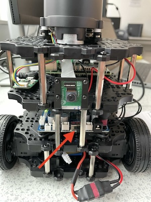
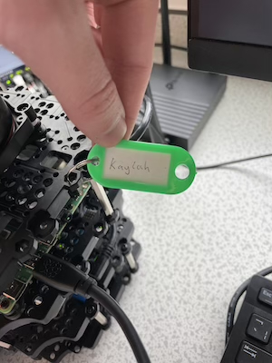

10. How to use the real-robot#
Contact: Xiao Wang (x.wang16@leeds.ac.uk)
10.1. Turn on the robot#
Turn on the robot. There is a black switch at the bottom board (see picture below). Allow a minute or two for the robot to boot and connect to the Wi-Fi.

10.2. SSH to the robot by its hostname#
Please note that, to access the robot, you need to SSH to a robot. There is no GUI. SSH is a tool that lets you remotely connect to another machine using the command line interface.
You need to be in room 2.07 with the robot and logged in to the university Linux machines on a desktop PC.
One of you, do the following:
Log in to your account on the desktop PC.
Make sure that the PC is connected to the local network (router). You can check this by going to the top-right corner, inspect networking and ensure that the PC is connected to both PCI and non-PCI (USB) network interfaces. If the non-PCI interface is disabled, please enable it now.
Each robot has a label with a name. For example “kaylah” (see picture below). You need this name to
sshto the robot.Open a terminal window (not in singularity and not in Code) and execute the following command:
ssh student@kaylah.local. Replace thekaylahpart with the name of your robot you are using. You will be asked a “yes/no” question initially, type “yes” and hit enter. You will be asked for a password. That’s the password of the robot, usestudentas the password. You are in. You should see a promptstudent@kaylahand ready to execute terminal commands on the robot!

10.3. Start the robot drivers#
In the simulation labs, when you launched Gazebo, it also launched certain, simulated, robot drivers. This wasn’t visible to you then. When working with the real-robot, obviously you won’t launch Gazebo, but you need to launch the robot drivers.
Note that on the real-robot we do not have a container, everything is installed on the host operating system.
In the terminal window you SSH’ed into the robot type the following:
ros2 launch turtlebot3_bringup robot.launch.py
The above will launch the robot drivers and the camera driver.
That’s the only command you need to run on the robot. Keep the terminal window open at all times. You can run everything else on your PC, and ROS will handle communication with the robot.
10.4. Let your PC know which robot to talk to#
Background information
When using ROS over the network, ROS will have a default ROS_DOMAIN_ID
(representing a logical division of the network) which will allow it to
discover ROS nodes, topics, services etc. However, in our case we may have
anywhere from 1 to 15 turtlebots on the same network simultaneously, all of
which will use identical node, topic and service names.
We need to logically separate them on the network to avoid conflicts. ROS,
fortunately, offers a way to do this easily. In the .bashrc of each robot we
assigned a unique ROS_DOMAIN_ID just for that robot. You need to know the
ROS_DOMAIN_ID of the robot you are working with and update your PC’s
ROS_DOMAIN_ID to match it.
To make your life easier, we prepared a bash script that you can put in your
.bashrc to automate this (including un-setting the ROS_LOCALHOST_ONLY
variable). Read the “IMPORTANT: Update your .bashrc” section below to learn
how.
IMPORTANT: Update your .bashrc (one-time configuration)
This is one-time configuration. Please update your .bashrc file and include the following code (copy-paste don’t type it) at the top of your file:
function workon_real_robot() {
names=(
"kaylah"
"phoebe"
"davina"
"cat"
"delilah"
"cam"
"jane"
"rosa"
"freya"
"aisha"
"frankie"
"brie"
"lola"
"toby"
"horace"
)
if [ $# -eq 0 ]; then
selected_name=$(printf "%s\n" "${names[@]}" | fzf --prompt="Select a robot name: ")
else
selected_name=${1}
if [[ ! " ${names[*]} " =~ [[:space:]]${selected_name}[[:space:]] ]]; then
echo "Robot name invalid."
return
fi
fi
if [ -z "$selected_name" ]; then
echo "No name selected, exiting."
return
fi
selected_ros_domain_id=0
for i in "${!names[@]}"; do
if [[ "${names[$i]}" == "$selected_name" ]]; then
selected_ros_domain_id=$((i + 1))
break
fi
done
printf "You are set to work with the '${selected_name}' robot on sub-network $selected_ros_domain_id.\n"
export PS1="[COMP3631] talking to ${selected_name}> \w \$ "
export ROS_LOCALHOST_ONLY=0
export ROS_DOMAIN_ID=$selected_ros_domain_id
}
After the change to your .bashrc you need to source it in already running
terminal windows to make the changes effective: source ~/.bashrc.
The interactive way
To get the PC connected on the same sub-network with your robot you need to execute the following command within a Singularity environment:
workon_real_robot
The above should work out of the box in Code, if you get any errors run:
source ~/.bashrc.
This should pull a list of robot names ready for you to select one. You can
start typing the name of your robot to filter out the list.
use the arrows to move and select the name of your robot.
Once you find the name of your robot in the list, hit ENTER to select it. This should set up your ROS environment on your PC the right way to be able to talk with that specific robot and nothing else.
Verify that your prompt now reads [COMP3631] talking to <ROBOT_NAME>>, this
is the indicator that your terminal is on the same sub-network with that robot.
Any new terminal windows you open, you need to run the above command and select
your robot (unless you do the configuration in the next section).
The automatic way (but will require constant update if you change robot)
If you are planning to work with the specific robot for a longer period of time,
you can also put a line at the end of your .bashrc. Your .bashrc should
already include an if statement at the end that looks like this:
if [ -d /opt/ros/humble/ ]; then
PS1="[COMP3631] Singularity> \w \$ "
source /opt/ros/humble/setup.bash
. /usr/share/gazebo/setup.sh
if [ -d $HOME/ros2_ws/install/ ]; then
source $HOME/ros2_ws/install/setup.bash
fi
export ROS_DOMAIN_ID=30 #TURTLEBOT3
export TURTLEBOT3_MODEL=burger
export ROS_LOCALHOST_ONLY=1
fi
Just put the following line at the end of that if statement (under last export but before the fi):
workon_real_robot [ROBOT_NAME]
Please note the argument [ROBOT_NAME] (which should match a valid robot name)
after workon_real_robot which makes this non-interactive and it will
automatically set up the machine to be used with the robot name you are
providing as an argument. This will be executed on a new terminal window in
Code, for example, and you won’t need to run it manually. If you start working
with a different robot or you want to work in simulation, you will need to
update/remove it. Note that we put that line within the if statement to avoid
changing your terminal’s prompt when not in the container.
10.5. Check that your PC is connected to the robot#
To simply verify that the PC is connected and working make sure:
In the ssh session with the robot you started the dirvers.
Open a new terminal (in Code), make sure you are in a singularity container.
On the PC (not in SSH session) run
workon_real_robotthen runros2 topic listand you should see a big list of topics, including the familiar/cmd_velfrom lab 3.